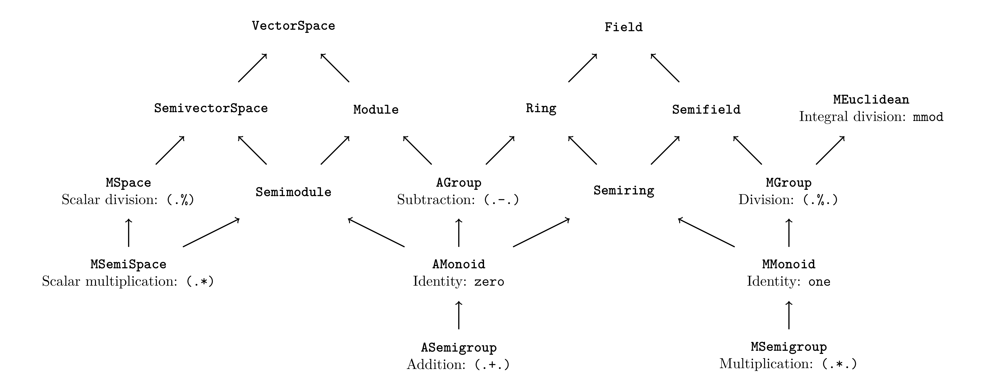

| Safe Haskell | None |
|---|---|
| Language | Haskell2010 |
Numeric.Algebra
Description
This module reexports algebraic typeclasses.
Since: 0.1
Synopsis
- module Numeric.Algebra.Additive
- module Numeric.Algebra.Multiplicative
- module Numeric.Algebra.MetricSpace
- module Numeric.Algebra.Normed
- module Numeric.Algebra.Semiring
- module Numeric.Algebra.Ring
- module Numeric.Algebra.Semifield
- module Numeric.Algebra.Field
- module Numeric.Algebra.Space
Motivation
The primary interface to numerical operations in Haskell is Num.
Unfortunately, Num has a key limitation: it is "too large". For example,
if we want to opt-in to addition, we must also opt-in to subtraction,
multiplication, and integer literal conversions. These may not make sense
for the type at hand (e.g. naturals), so we are stuck either providing an
invariant-breaking dangerous implementation (e.g. defining subtraction for
arbitrary naturals) or throwing runtime errors.
Solution
algebra-simple's approach is to split this functionality into multiple
typeclasses, so types can opt-in to exactly as much functionality as they
want. The typeclasses are inspired by abstract algebra. The algebraic
hierarchy can be found in the following diagram. An arrow A -> B should
be read as "B is an A". For example, a Module is both a Semimodule
and an AGroup.

A longer description can be found in the table below, along with the Num
functionality they are intended to replace:
| Typeclass | Description | New | Num |
|---|---|---|---|
ASemigroup
| Addition. | (.+.)
| (+)
|
AMonoid
| ASemigroup with
identity. | zero
| |
AGroup
| Subtraction . | (.-.)
| (-)
|
MSemigroup
| Multiplication. | (.*.)
| (*)
|
MMonoid
| MSemigroup with
identity. | one
| |
MGroup
| Division. | (.%.)
| div,
(/) |
MEuclidean
| Euclidean division. | mmod
| mod
|
Normed
| Types that support a "norm". | norm
| abs
|
Semiring
| AMonoid and
MMonoid. | ||
Ring
| AGroup and
MMonoid. | ||
Semifield
| AMonoid and
MGroup. | ||
Field
| Ring and
Semifield. | ||
MSemiSpace
| Scalar multiplication. | (.*),
(*.)
| |
MSpace
| Scalar division. | (.%)
(%.)
| |
Semimodule
| AMonoid and
MSemiSpace. | ||
Module
| Semimodules and
AGroup . | ||
SemivectorSpace
| Semimodule and
MSpace. | ||
VectorSpace
| Module and
SemivectorSpace. |
We have the following guiding principles:
Simplicity
This is not a comprehensive implementation of abstract algebra, merely the classes needed to replace the usual
Num-like functionality. For the former, see algebra.Practicality
When there is tension between practicality and theoretical "purity", we favor the former. To wit:
We provide two semigroup/monoid/group hierarchies:
ASemigroup/AMonoid/AGroupandMSemigroup/MMonoid/MGroup. Formally this is clunky, but it allows us to:- Reuse the same operator for ring multiplication and types that have sensible multiplication but cannot be rings (e.g. naturals).
- Provide both addition and multiplication without an explosion of newtype wrappers.
Leniency vis-à-vis algebraic laws
For instance, integers cannot satisfy the field laws, and floats do not satisfy anything, as their equality is nonsense. Nevertheless, we provide instances for them. Working with technically unlawful numerical instances is extremely common, so we take the stance that it is better to provide such instances (albeit with known limitations) than to forgo them completely (read: integer division is useful). The only instances we disallow are those likely to cause runtime errors (e.g. natural subtraction) or break expected invariants.
- Division classes (i.e.
MGroup,VectorSpace) have their own division function that must be implemented. Theoretically this is unnecessary, as we need only a functioninv :: a -> aand we can then define division asx .%. d = d .*. inv d. But this will not work for many types (e.g. integers), so we force users to define a (presumably sensible)(.%.), so there is no chance of accidentally using a nonsensicalinv.
Safety
Instances that break the type's invariants (
instance), are banned. Furthermore, instances that are highly likely to go wrong (e.g.RingNaturalRationalwith bounded integral types) are also forbidden.Ergonomics
We choose new operators that do not clash with prelude.
We provide instances for built-in numeric types where it makes sense.
Algebraic Typeclasses
module Numeric.Algebra.Additive
module Numeric.Algebra.MetricSpace
module Numeric.Algebra.Normed
module Numeric.Algebra.Semiring
module Numeric.Algebra.Ring
module Numeric.Algebra.Semifield
module Numeric.Algebra.Field
module Numeric.Algebra.Space